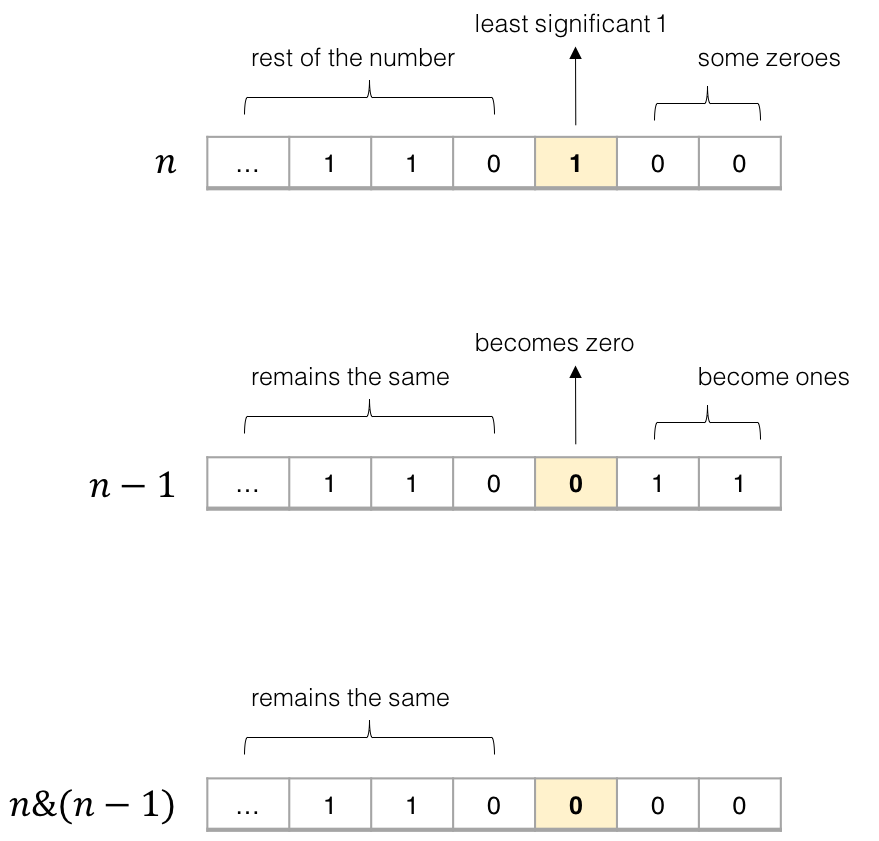

191. Number of 1 Bits

减法解法让人开眼界。但是有一个疑问：它的效率就一定高吗？
Write a function that takes an unsigned integer and return the number of '1' bits it has (also known as the Hamming weight).
Example 1:
Input: 00000000000000000000000000001011
Output: 3
Explanation: The input binary string 00000000000000000000000000001011 has a total of three '1' bits.
Example 2:
Input: 00000000000000000000000010000000 Output: 1 Explanation: The input binary string 00000000000000000000000010000000 has a total of one '1' bit.
Example 3:
Input: 11111111111111111111111111111101 Output: 31 Explanation: The input binary string 11111111111111111111111111111101 has a total of thirty one '1' bits.
Note:
-
Note that in some languages such as Java, there is no unsigned integer type. In this case, the input will be given as signed integer type and should not affect your implementation, as the internal binary representation of the integer is the same whether it is signed or unsigned.
-
In Java, the compiler represents the signed integers using 2’s complement notation. Therefore, in Example 3 above the input represents the signed integer
-3.
Follow up:
If this function is called many times, how would you optimize it?
package com.diguage.algorithm.leetcode;
/**
* = 191. Number of 1 Bits
*
* https://leetcode.com/problems/number-of-1-bits/[Number of 1 Bits - LeetCode]
*
* Write a function that takes an unsigned integer and return the number of '1' bits it has (also known as the https://en.wikipedia.org/wiki/Hamming_weight[Hamming weight]).
*
* .Example 1:
* [source]
* ----
* Input: 00000000000000000000000000001011
* Output: 3
* Explanation: The input binary string 00000000000000000000000000001011 has a total of three '1' bits.
* ----
*
* .Example 2:
* [source]
* ----
* Input: 00000000000000000000000010000000
* Output: 1
* Explanation: The input binary string 00000000000000000000000010000000 has a total of one '1' bit.
* ----
*
* .Example 3:
* [source]
* ----
* Input: 11111111111111111111111111111101
* Output: 31
* Explanation: The input binary string 11111111111111111111111111111101 has a total of thirty one '1' bits.
* ----
*
* *Note:*
*
* * Note that in some languages such as Java, there is no unsigned integer type. In this case, the input will be given as signed integer type and should not affect your implementation, as the internal binary representation of the integer is the same whether it is signed or unsigned.
* * In Java, the compiler represents the signed integers using https://en.wikipedia.org/wiki/Two%27s_complement[2's complement notation]. Therefore, in *Example 3* above the input represents the signed integer `-3`.
*
* *Follow up:*
*
* If this function is called many times, how would you optimize it?
*
* @author D瓜哥, https://www.diguage.com/
* @since 2020-01-25 23:12
*/
public class _0191_NumberOf1Bits {
/**
* Runtime: 2 ms, faster than 7.49% of Java online submissions for Number of 1 Bits.
*
* Memory Usage: 38 MB, less than 5.41% of Java online submissions for Number of 1 Bits.
*/
public int hammingWeight(int n) {
int result = 0;
while (n != 0) {
if ((n & 1) == 1) {
++result;
}
n = n >>> 1;
}
return result;
}
/**
* Runtime: 2 ms, faster than 7.49% of Java online submissions for Number of 1 Bits.
*
* Memory Usage: 38.2 MB, less than 5.41% of Java online submissions for Number of 1 Bits.
*
* Copy from: https://leetcode.com/problems/number-of-1-bits/solution/[Number of 1 Bits solution - LeetCode]
*/
public int hammingWeightSubtraction(int n) {
int result = 0;
while (n != 0) {
result++;
n &= (n - 1);
}
return result;
}
public static void main(String[] args) {
_0191_NumberOf1Bits solution = new _0191_NumberOf1Bits();
int r1 = solution.hammingWeight(-3);
System.out.println((r1 == 31) + " : " + r1);
}
}